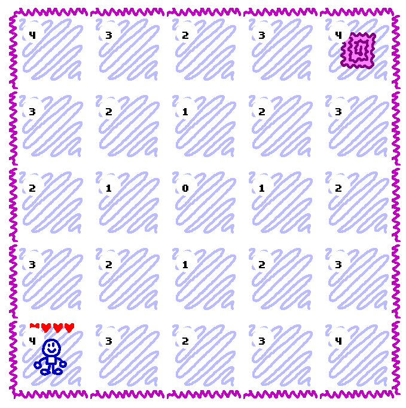
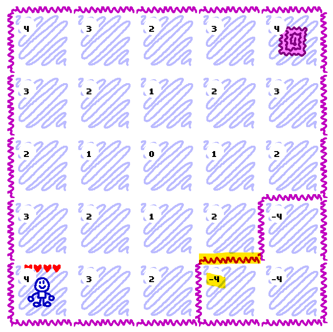
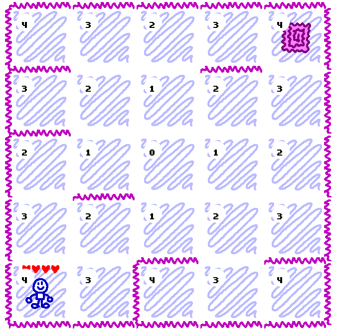
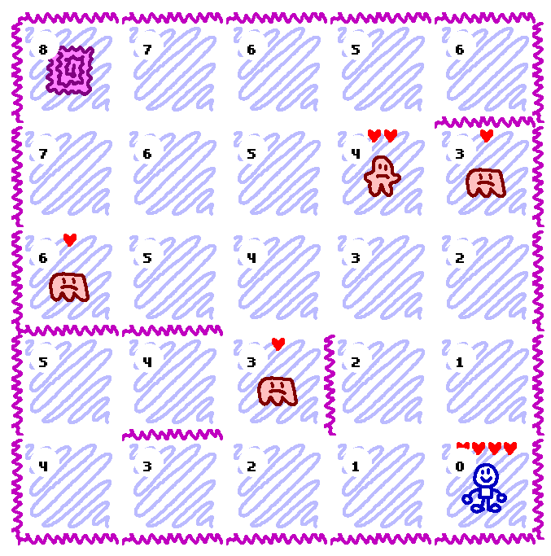

Special Thanks: Michael Brough, Sapazu
Step 2. The Pathfinding Algorithm
Welcome to my tutorial!
This is my first tutorial, which I am writing at the request of my friend Sapazu.
Each section will contain an explanation of the required steps, followed by a code snippet with comments.
My example project was built in GameMaker Studio 1.6, so the sample code is written in GML, similar to javascript.
There is not enough information here to recreate my project from scratch, but I hope the ideas are explained in such a way that you can go on to create your own game in this style.
Broughlikes take place in a series of small, randomly generated square maps.
These maps contain a grid of spaces, subdivided by a random configuration of walls.
Each map will contain a player, an exit door, and some number of monsters.
Related code from the init_map function
//The top-right corner of the map on-screen will be (64, 64)
var start_x = 64;
var start_y = 64;
//The player will start in one of the 4 corners of the map.
var player_start_i = irandom(1)*4; //Horizontal space is either 0 or 4
var player_start_j = irandom(1)*4; //Vertical space is either 0 or 4
//The escape portal will start in the corner opposite to the player
var escape_i = abs(player_start_i - 4);
var escape_j = abs(player_start_j - 4);
//Spaces will be 128 x 128 sprites
global.space_size = 128;
//Create a 5 x 5 grid of spaces
for (var i = 0; i < 5; i += 1)
{
for (var j = 0; j < 5; j += 1)
{
var space = instance_create(start_x + i*128, start_y + j*128, Space_obj);
/* global.map is a 2d array, containing all of the spaces.
We can use this to easily determine which spaces are next to each other without writing a lot of
collision code or doing coordinate multiplication. */
global.map[i, j] = space;
/* All of the spaces at the start/end of a row/column should have outward-facing walls,
so the player cannot walk out of the map. */
if (i == 0)
{
add_wall_in_direction_from_space(global.map[i, j], 180);
}
else if (i == 4)
{
add_wall_in_direction_from_space(global.map[i, j], 0);
}
if (j == 0)
{
add_wall_in_direction_from_space(global.map[i, j], 90);
}
else if (j == 4)
{
add_wall_in_direction_from_space(global.map[i, j], 270);
}
// If this is the space we selected for the player, add the player!
if (i == player_start_i && j == player_start_j)
{
Player_obj.x = space.x + global.space_size/2;
Player_obj.y = space.y + global.space_size/2;
}
else if (i == escape_i && j == escape_j)
{
instance_create(space.x + global.space_size/2, space.y + global.space_size/2, Escape_obj);
}
}
}
I use a modified version of the a* pathfinding algorithm to determine the shortest path between spaces on the map.
We will create a function named "build_pathfinding_map" which takes a single "start space" as an argument.
It will create a 2d array with the same dimensions as the map.
Each cell will contain a number, corresponding to the number of spaces away it is from the start space.
Code from the build_pathfinding_map function:
//build_pathfinding_map(space)
// global.pathing_values is a 2d array, the same size as global.map. Using a given starting space,
// this assigns a number to each space, representing the distance away from the start.
// We can use this for map-building and pathfinding.
var space = argument0;
var coords = get_map_coordinates_from_space(space);
// Clear the pathing_values array.
// Some spaces may be inaccessible due to wall placement. If this is the case, we want
// to overwrite the old value with "noone"
for (var i = 0; i < 5; i += 1)
{
for (var j = 0; j < 5; j += 1)
{
global.pathing_values[i, j] = noone;
}
}
// The starting space is 0 spaces away from itself.
// This function will ALSO assign values to the surrounding spaces, recursively filling the whole map.
assign_pathfinding_distance(coords[0], coords[1], 0);
The "assign_pathfinding_distance" helper function will take a pair of corrdinates and a value as input, and will perform the following steps:
Code from the assign_pathfinding_distance function
//assign_pathfinding_distance(i, j, val)
var i = argument0;
var j = argument1;
var val = argument2;
var current_val = global.pathing_values[i, j];
// If this space does not have a pathing_values value
// or the current value is GREATER than the new value
if (current_val == noone || current_val > val)
{
// Set the value in the pathing_values array, which represents the distance from the start space
global.pathing_values[i, j] = val;
// Check each orthogonal direction: up, down, left and right.
// If this is not the last space in the row/column in either direction,
// and there is not a wall in the way, assign the new value + 1 to that space.
// For instance, if the current space is 3 spaces away fro the start,
// we assert that all of the surrounding spaces are 4 spaces from the start.
// The value will only be assigned if the new value is less than the current value.
if (i > 0)
{
if !wall_between_spaces(global.map[i, j], global.map[i-1, j])
{
assign_pathfinding_distance(i-1, j, val+1);
}
}
if (i < 4)
{
if !wall_between_spaces(global.map[i, j], global.map[i+1, j])
{
assign_pathfinding_distance(i+1, j, val+1);
}
}
if (j > 0)
{
if !wall_between_spaces(global.map[i, j], global.map[i, j-1])
{
assign_pathfinding_distance(i, j-1, val+1);
}
}
if (j < 4)
{
if !wall_between_spaces(global.map[i, j], global.map[i, j+1])
{
assign_pathfinding_distance(i, j+1, val+1);
}
}
}
Since your map does not currently have any interior walls, if you call build_pathfinding_map with the center space as the start space, the pathing_values array should look like this:
[
[4, 3, 2, 3, 4],
[3, 2, 1, 2, 3],
[2, 1, 0, 1, 2],
[3, 2, 1, 2, 3],
[4, 3, 2, 3, 4]
]
Notice how the corner spaces are 4 orthogonal moves from the center space.



Code from the add_random_wall function
// If there is at least 1 valid wall location on our list
if ds_list_size(global.wall_locations) > 0
{
// Add a wall to the first location on the list.
// (It was shuffled when we created it, so this should be random.)
var location = ds_list_find_value(global.wall_locations, 0);
var wall = add_wall_between_spaces(location[0], location[1]);
// Create the pathfinding map
build_pathfinding_map(global.map[2, 2]);
var valid = true;
// Check the spaces on either side of the new wall.
// If either space has been completely blocked off from the rest of the map, this wall location is no good.
for (var i = 0; i < 2; i += 1)
{
var coords = get_map_coordinates_from_space(location[i]);
if (global.pathing_values[coords[0], coords[1]] == noone)
{
valid = false;
}
}
// Remove the first wall location from the list
ds_list_delete(global.wall_locations, 0);
// If this was not a valid location, delete the new wall, and repeat the entire process.
if (!valid)
{
with (wall) { instance_destroy(); }
add_random_wall();
}
}
In my example, each room will be more challenging than the last.
I will have 3 types of monsters. They will all share the same behavior, but will have different art and different amounts of starting health.
I will use a persistent "Monster Manager" class that will track the number of levels that the player has cleared,
and will determine the number and level of the monsters that appear in each room.
I will not cover that process in detail in this tutorial, but the end result is a "monsters_array" that is generated when the player arrives in a new room.
The "monsters_array" is an array of integers. The number of elements determines the number of monsters, and each item determines the level of that particular monster.
For instance, an array that looks like this [1, 1, 1, 2, 3] would spawn 3 level-1 monsters, a level-2 monster, and a level-3 monster.
We will create a function called "create_monsters_on_random_spaces", which will take the monsters_array as input. It will follow the following steps:
[1, 1, 1, 2]:

Code from the create_monsters_on_random_spaces function
///create_monsters_on_random_spaces(monsters_array)
// The monsters array is an array of integers.
// Each integer is the level of a monster to be generated at a random location.
// For instance: [ 1, 2, 2, 3 ]
// This should generate a level 1 monsters, a pair of level 2 monsters, and a level 3 monster.
var monsters_array = argument0;
// Build the pathfinding array, with the player's current position as the starting point
with (Player_obj)
{
build_pathfinding_map(get_current_space());
}
// Build a list of all spaces that are at least 3 moves away from the player.
var valid_spaces = ds_list_create();
for (var i = 0; i < 5; i += 1)
{
for (var j = 0; j < 5; j += 1)
{
if (global.pathing_values[i, j] >= 3)
{
ds_list_add(valid_spaces, global.map[i, j]);
}
}
}
// Shuffle the list of valid spaces.
ds_list_shuffle(valid_spaces);
// Pick spaces from the list to create monsters from the array of the appropriate level.
for (var i = 0; i < array_length_1d(monsters_array); i += 1)
{
if (ds_list_size(valid_spaces) > 0)
{
var space = ds_list_find_value(valid_spaces, 0);
create_monster(space, monsters_array[i]);
ds_list_delete(valid_spaces, 0);
}
}
In each room, the player and the monsters will take turns moving.
Broughlikes famously do not allow the player to "wait" instead of moving, so we will not end the player's turn if they attempt to move into a wall or off of the map.
If the player moves "into" a monster, the player will deal damage to the monster instead of moving. This style of "bump-to-attack" movement is a staple of the Broughlike genre.
After each player turn, all of the monsters wil move.
Since all of the monsters will be moving towards the player, we will sort them based on their distance from the player.
The closest monster will move first, and then the second-closest, and so-on.
This will help avoid traffic jams - monsters cannot share the same space, so moving the closest monster at the end of the monsters' turn would block all
of the other monsters from moving closer to the player.
Similar to the player, if a monster moves "into" the player, the monsters remainins stationary and deals damage to the player.
Moving the player, calculating damage and awarding points are all relatively simple.
If your game has a lot of complicated triggered effects and abilities, or multiple monster types with different phases, you may need to implement a finite state machine.
For my example game, I use a "ready_to_move" flag on the player object that determines whether it is the player's turn or the monsters' turn.
Code from the move_all_monsters function
// If any monster have 0 hp, destroy them and give the player points
// according to their level before beginning pathfinding.
with (Monster_obj)
{
if hp <= 0
{
Player_obj.points += MonsterManager_obj.difficulty * (image_index + 1);
instance_destroy();
}
}
var monster_count = instance_number(Monster_obj);
// If there are no monsters, allow the player to move again immediately.
if (monster_count == 0)
{
Player_obj.ready_to_move = true;
}
else
{
with (Player_obj)
{
// Build the pathfinding array, using the player's position as the start space.
build_pathfinding_map(get_current_space());
}
// Mark each monster for movement this turn, and get the current distance from the player.
with (Monster_obj)
{
has_moved = false;
coords = get_map_coordinates_from_space(get_current_space());
dist_to_player = global.pathing_values[coords[0], coords[1]];
}
MonsterManager_obj.timer = 2;
// Repeat the following steps while there are still monsters that have not attempted to move.
while (monster_count > 0)
{
MonsterManager_obj.current_monster = noone;
// Identify the monster the closest monster to the player that has not moved yet
with (Monster_obj)
{
if !has_moved && ( MonsterManager_obj.current_monster == noone || dist_to_player < MonsterManager_obj.current_monster.dist_to_player )
{
MonsterManager_obj.current_monster = self;
}
}
with (MonsterManager_obj.current_monster)
{
var best_space = noone;
var best_dist = noone;
// If the monster is 1 space away from the player, attack the player!
if (dist_to_player) == 1
{
attack_player = true;
best_space = get_current_space();
}
else
{
attack_player = false;
// Search through the orthogonally adjacent spaces.
// This starts with a random direction, so monsters will not
// always make the same choice when there are multiple viable paths to the player.
var start_index = irandom(3);
for (var d = start_index; d < start_index + 4; d += 1)
{
var angle_in_radians = d/2*pi;
var new_i = coords[0] + cos(angle_in_radians);
var new_j = coords[1] - sin(angle_in_radians);
// A valid space must be inside the 5 x 5 map grid, cannot be blocked by a wall, and cannot contain another monster.
var new_space_is_inside_map = new_i >= 0 && new_j >= 0 && new_i <= 4 && new_j <= 4;
if new_space_is_inside_map
{
var new_dist = global.pathing_values[new_i, new_j];
var new_space = global.map[new_i, new_j];
var blocked_by_wall = wall_between_spaces(get_current_space(), new_space);
if (!blocked_by_wall)
{
var new_space_already_contains_a_monster = place_meeting(
new_space.x + global.space_size/2,
new_space.y + global.space_size/2,
Monster_obj);
if (!new_space_already_contains_a_monster)
{
// If this is the first valid space we find, this becomes our best option.
// Otherwise, compare whether this space is closer to the player than the previous best option.
if (best_space == noone || best_dist > new_dist)
{
best_space = new_space;
best_dist = new_dist;
}
}
}
}
}
}
// If we found a valid space (or we are close enough to attack), move immediately.
// It is disorienting to the player if all of the monsters all move instantly and at the same time.
// We need to move the monsters right away so that we can calculate pathfinding all at once, but
// we will show their movements 1-at-a-time at 10-frame intervals using a timer.
if (best_space != noone)
{
timer = MonsterManager_obj.timer;
MonsterManager_obj.timer += 2;
x = best_space.x + global.space_size/2;
y = best_space.y + global.space_size/2;
}
has_moved = true;
}
monster_count -= 1;
}
}
It may be disorienting to the player if all monsters move instantly and simultaneously.
In my example, I assign a timer to each monster, so that the monsters will appear to move one-at-a-time after the "move_all_monsters" function is done.
To achieve this, I need to draw monsters on their prior space while the timer is running.
If the player is moving quickly, they may input a movement key while the monster timer is still counting down, even though it only lasts a few frames.
For this reason, I store the player's movement input in a queue, and process the first key press in the queue when the player's turn starts.